Web Server Statistics for earn.terapk.com
Web Server Statistics for earn.terapk.com
Program started on Sun, Jul 12 2026 at 1:10 PM.
Analyzed requests from Wed, Jul 08 2026 at 8:12 AM to Sun, Jul 12 2026 at 11:40 AM (4.14 days).
Web Server Statistics for earn.terapk.comProgram started on Sun, Jul 12 2026 at 1:10 PM.
Analyzed requests from Wed, Jul 08 2026 at 8:12 AM to Sun, Jul 12 2026 at 11:40 AM (4.14 days).
(Go To: Top | General Summary | Monthly Report | Daily Summary | Hourly Summary | Domain Report | Organization Report | Failed Referrer Report | Referring Site Report | Browser Report | Browser Summary | Operating System Report | Status Code Report | File Size Report | File Type Report | Directory Report | Request Report)
Successful requests: 417
Average successful requests per day: 100
Successful requests for pages: 235
Average successful requests for pages per day: 56
Failed requests: 782
Redirected requests: 3
Distinct files requested: 14
Distinct hosts served: 87
Data transferred: 359.78 kilobytes
Average data transferred per day: 86.81 kilobytes
(Go To: Top | General Summary | Monthly Report | Daily Summary | Hourly Summary | Domain Report | Organization Report | Failed Referrer Report | Referring Site Report | Browser Report | Browser Summary | Operating System Report | Status Code Report | File Size Report | File Type Report | Directory Report | Request Report)
Each unit ( ) represents 6 requests for pages or part thereof.
) represents 6 requests for pages or part thereof.
| month | #reqs | #pages | |
|---|---|---|---|
| Jul 2026 | 417 | 235 |   |
Busiest month: Jul 2026 (235 requests for pages).
(Go To: Top | General Summary | Monthly Report | Daily Summary | Hourly Summary | Domain Report | Organization Report | Failed Referrer Report | Referring Site Report | Browser Report | Browser Summary | Operating System Report | Status Code Report | File Size Report | File Type Report | Directory Report | Request Report)
Each unit () represents 4 requests for pages or part thereof.
| day | #reqs | #pages | |
|---|---|---|---|
| Sun | 17 | 9 |  |
| Mon | 0 | 0 | |
| Tue | 0 | 0 | |
| Wed | 319 | 179 |  |
| Thu | 58 | 32 | |
| Fri | 19 | 11 | |
| Sat | 4 | 4 | |
(Go To: Top | General Summary | Monthly Report | Daily Summary | Hourly Summary | Domain Report | Organization Report | Failed Referrer Report | Referring Site Report | Browser Report | Browser Summary | Operating System Report | Status Code Report | File Size Report | File Type Report | Directory Report | Request Report)
Each unit () represents 2 requests for pages or part thereof.
| hour | #reqs | #pages | |
|---|---|---|---|
| 0 | 0 | 0 | |
| 1 | 0 | 0 | |
| 2 | 0 | 0 | |
| 3 | 0 | 0 | |
| 4 | 2 | 2 | |
| 5 | 1 | 1 | |
| 6 | 29 | 15 | |
| 7 | 1 | 1 | |
| 8 | 102 | 66 | |
| 9 | 53 | 21 | |
| 10 | 75 | 35 |  |
| 11 | 7 | 3 | |
| 12 | 2 | 2 | |
| 13 | 18 | 10 | |
| 14 | 12 | 4 | |
| 15 | 72 | 46 | |
| 16 | 20 | 14 | |
| 17 | 5 | 1 | |
| 18 | 4 | 4 | |
| 19 | 4 | 4 | |
| 20 | 6 | 2 | |
| 21 | 3 | 3 | |
| 22 | 1 | 1 | |
| 23 | 0 | 0 |
(Go To: Top | General Summary | Monthly Report | Daily Summary | Hourly Summary | Domain Report | Organization Report | Failed Referrer Report | Referring Site Report | Browser Report | Browser Summary | Operating System Report | Status Code Report | File Size Report | File Type Report | Directory Report | Request Report)
Listing domains, sorted by the amount of traffic.
| #reqs | %bytes | domain |
|---|---|---|
| 417 | 100% | [unresolved numerical addresses] |
(Go To: Top | General Summary | Monthly Report | Daily Summary | Hourly Summary | Domain Report | Organization Report | Failed Referrer Report | Referring Site Report | Browser Report | Browser Summary | Operating System Report | Status Code Report | File Size Report | File Type Report | Directory Report | Request Report)
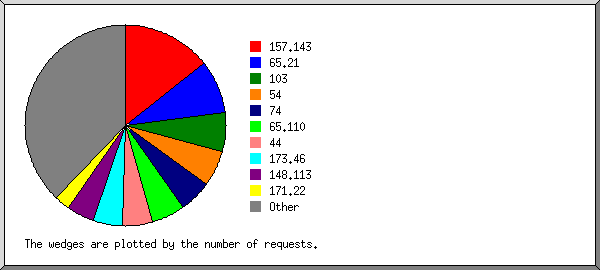
Listing the top 20 organizations by the number of requests, sorted by the number of requests.
| #reqs | %bytes | organization |
|---|---|---|
| 60 | 16.54% | 157.143 |
| 36 | 8.28% | 65.21 |
| 26 | 5.71% | 103 |
| 24 | 5.67% | 54 |
| 22 | 4.28% | 74 |
| 22 | 5.73% | 65.110 |
| 20 | 4.91% | 44 |
| 20 | 3.76% | 173.46 |
| 18 | 4.14% | 148.113 |
| 11 | 2.03% | 171.22 |
| 10 | 2.45% | 18 |
| 10 | 2.45% | 216.73 |
| 9 | 1.99% | 149.57 |
| 7 | 1.61% | 193.32 |
| 7 | 1.34% | 23 |
| 7 | 1.34% | 85 |
| 6 | 2.23% | 91 |
| 6 | 5.30% | 149.50 |
| 6 | 1.15% | 202.78 |
| 6 | 1.42% | 100 |
| 84 | 17.66% | [not listed: 36 organizations] |
(Go To: Top | General Summary | Monthly Report | Daily Summary | Hourly Summary | Domain Report | Organization Report | Failed Referrer Report | Referring Site Report | Browser Report | Browser Summary | Operating System Report | Status Code Report | File Size Report | File Type Report | Directory Report | Request Report)
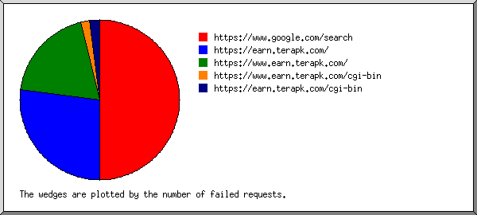
Listing referring URLs, sorted by the number of failed requests.
(Go To: Top | General Summary | Monthly Report | Daily Summary | Hourly Summary | Domain Report | Organization Report | Failed Referrer Report | Referring Site Report | Browser Report | Browser Summary | Operating System Report | Status Code Report | File Size Report | File Type Report | Directory Report | Request Report)
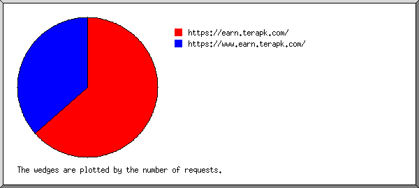
Listing referring sites, sorted by the number of requests.
| #reqs | site |
|---|---|
| 66 | https://earn.terapk.com/ |
| 38 | https://www.earn.terapk.com/ |
(Go To: Top | General Summary | Monthly Report | Daily Summary | Hourly Summary | Domain Report | Organization Report | Failed Referrer Report | Referring Site Report | Browser Report | Browser Summary | Operating System Report | Status Code Report | File Size Report | File Type Report | Directory Report | Request Report)
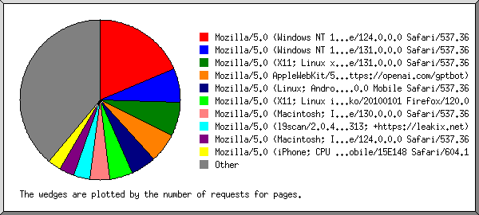
Listing the top 40 browsers by the number of requests for pages, sorted by the number of requests for pages.
| #reqs | #pages | browser |
|---|---|---|
| 56 | 44 | Mozilla/5.0 (Windows NT 10.0; Win64; x64) AppleWebKit/537.36 (KHTML, like Gecko) Chrome/124.0.0.0 Safari/537.36 |
| 18 | 16 | Mozilla/5.0 (Windows NT 10.0; Win64; x64) AppleWebKit/537.36 (KHTML, like Gecko) Chrome/131.0.0.0 Safari/537.36 |
| 20 | 16 | Mozilla/5.0 (X11; Linux x86_64) AppleWebKit/537.36 (KHTML, like Gecko) Chrome/131.0.0.0 Safari/537.36 |
| 22 | 14 | Mozilla/5.0 AppleWebKit/537.36 (KHTML, like Gecko; compatible; GPTBot/1.4; +https://openai.com/gptbot) |
| 60 | 12 | Mozilla/5.0 (Linux; Android 6.0; Nexus 5 Build/MRA58N) AppleWebKit/537.36 (KHTML, like Gecko) Chrome/130.0.0.0 Mobile Safari/537.36 |
| 11 | 11 | Mozilla/5.0 (X11; Linux i686; rv:109.0) Gecko/20100101 Firefox/120.0 |
| 11 | 9 | Mozilla/5.0 (Macintosh; Intel Mac OS X 10_15_7) AppleWebKit/537.36 (KHTML, like Gecko) Chrome/130.0.0.0 Safari/537.36 |
| 8 | 8 | Mozilla/5.0 (l9scan/2.0.435313e21313e2533323e2736313; +https://leakix.net) |
| 7 | 7 | Mozilla/5.0 (Macintosh; Intel Mac OS X 10_15_7) AppleWebKit/537.36 (KHTML, like Gecko) Chrome/124.0.0.0 Safari/537.36 |
| 6 | 6 | Mozilla/5.0 (iPhone; CPU iPhone OS 17_5 like Mac OS X) AppleWebKit/605.1.15 (KHTML, like Gecko) Version/17.5 Mobile/15E148 Safari/604.1 |
| 6 | 6 | Mozilla/5.0 (compatible; CensysInspect/1.1; +https://about.censys.io/) |
| 4 | 4 | Mozilla/5.0 (X11; Ubuntu; Linux x86_64; rv:134.0) Gecko/20100101 Firefox/134.0 |
| 4 | 4 | Mozilla/5.0 (X11; Linux x86_64) AppleWebKit/537.36 Chrome/120 Safari/537.36 |
| 20 | 4 | Mozilla/5.0 (iPad; CPU OS 17_4_1 like Mac OS X) AppleWebKit/605.1.15 (KHTML, like Gecko) Version/17.4.1 Mobile/15E148 Safari/604.1 |
| 20 | 4 | Mozilla/5.0 (iPhone; CPU iPhone OS 26_3 like Mac OS X) AppleWebKit/605.1.15 (KHTML, like Gecko) CriOS/144.0.7559.95 Mobile/15E148 Safari/604.1 |
| 4 | 4 | Mozilla/5.0 (X11; Linux x86_64; rv:142.0) Gecko/20100101 Firefox/142.0 |
| 6 | 3 | Mozilla/5.0 (Macintosh; Intel Mac OS X 15.7; rv:149.0) Gecko/20100101 Firefox/149.0 |
| 11 | 3 | Mozilla/5.0 (iPhone; CPU iPhone OS 18_7_8 like Mac OS X) AppleWebKit/605.1.15 (KHTML, like Gecko) Version/26.0 Mobile/15E148 Safari/604.1 |
| 2 | 2 | Mozilla/5.0 (Windows NT 10.0; Win64; x64) AppleWebKit/537.36 (KHTML, like Gecko) Chrome/60.0.3112.113 Safari/537.36 Assetnote/1.0.0 |
| 2 | 2 | Mozilla/5.0 (Windows NT 10.0; Win64; x64) AppleWebKit/537.36 (KHTML, like Gecko) Chrome/108.0.0.0 Safari/537.36 |
| 5 | 2 | Mozilla/5.0 (Macintosh; Intel Mac OS X 10_15_7) AppleWebKit/537.36 (KHTML, like Gecko) Chrome/147.0.0.0 Safari/537.36 |
| 2 | 2 | Mozilla/5.0 AppleWebKit/537.36 (KHTML, like Gecko; compatible; ChatGPT-User/1.0; +https://openai.com/bot) |
| 2 | 2 | Mozilla/5.0 (iPhone; CPU iPhone OS 18_6 like Mac OS X) AppleWebKit/605.1.15 (KHTML, like Gecko) Version/26.0 Mobile/15E148 Safari/604.1 |
| 6 | 2 | Mozilla/5.0 (Windows NT 10.0; Win64; x64) AppleWebKit/537.36 (KHTML, like Gecko) Chrome/148.0.0.0 Safari/537.36 |
| 10 | 2 | Mozilla/5.0 (X11; Linux x86_64) AppleWebKit/537.36 (KHTML, like Gecko) Chrome/150.0.0.0 Safari/537.36 |
| 10 | 2 | Mozilla/5.0 (Linux; Android 16; SM-S931B) AppleWebKit/537.36 (KHTML, like Gecko) Chrome/150.0.7871.46 Mobile Safari/537.36 |
| 2 | 2 | Mozilla/5.0 (compatible; bot) |
| 2 | 2 | Mozilla/5.0 (compatible; InternetMeasurement/1.0; +https://internet-measurement.com/) |
| 2 | 2 | Mozilla/5.0 (X11; Linux x86_64) AppleWebKit/537.36 (KHTML, like Gecko) Chrome/142.0.0.0 Safari/537.36 |
| 2 | 2 | RecordedFuture Global Inventory Crawler |
| 2 | 2 | Scrapy/2.16.0 (+https://scrapy.org) |
| 10 | 2 | Mozilla/5.0 (Macintosh; Intel Mac OS X 14_7_6) AppleWebKit/537.36 (KHTML, like Gecko) Chrome/150.0.7871.46 Safari/537.36 |
| 2 | 2 | Go-http-client/1.1 |
| 10 | 2 | Mozilla/5.0 AppleWebKit/537.36 (KHTML, like Gecko; compatible; ClaudeBot/1.0; +claudebot@anthropic.com) |
| 2 | 2 | python-requests/2.32.5 |
| 1 | 1 | Mozilla/5.0 (X11; Linux x86_64) AppleWebKit/537.36 (KHTML, like Gecko) Chrome/135.0.0.0 Safari/537.36 |
| 1 | 1 | Mozilla/5.0 (Windows NT 10.0; Win64; x64) AppleWebKit/537.36 (KHTML, like Gecko) Chrome/147.0.0.0 Safari/537.36 |
| 1 | 1 | Mozilla/5.0 (Windows NT 10.0; Win64; x64) AppleWebKit/537.36 (KHTML, like Gecko) Chrome/147.0.0.0 Safari/537.36 Edg/146.0.3856.109 |
| 1 | 1 | greedyhand/0.1 |
| 1 | 1 | Mozilla/5.0 (Macintosh; Intel Mac OS X 10_15_7) AppleWebKit/537.36 (KHTML, like Gecko) Chrome/122.0.0.0 Safari/537.36 |
| 45 | 21 | [not listed: 26 browsers] |
(Go To: Top | General Summary | Monthly Report | Daily Summary | Hourly Summary | Domain Report | Organization Report | Failed Referrer Report | Referring Site Report | Browser Report | Browser Summary | Operating System Report | Status Code Report | File Size Report | File Type Report | Directory Report | Request Report)
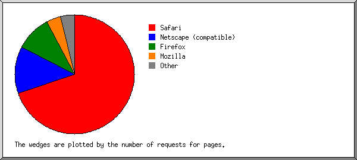
Listing browsers with at least 1 request for a page, sorted by the number of requests for pages.
| # | #reqs | #pages | browser |
|---|---|---|---|
| 1 | 318 | 164 | Safari |
| 247 | 140 | Safari/537 | |
| 66 | 22 | Safari/604 | |
| 5 | 2 | Safari/605 | |
| 2 | 50 | 30 | Netscape (compatible) |
| 3 | 31 | 23 | Firefox |
| 11 | 11 | Firefox/120 | |
| 4 | 4 | Firefox/134 | |
| 12 | 4 | Firefox/149 | |
| 4 | 4 | Firefox/142 | |
| 4 | 9 | 9 | Mozilla |
| 5 | 2 | 2 | RecordedFuture Global Inventory Crawler |
| 6 | 2 | 2 | Scrapy |
| 2 | 2 | Scrapy/2 | |
| 7 | 2 | 2 | python-requests |
| 2 | 2 | python-requests/2 | |
| 8 | 2 | 2 | Go-http-client |
| 2 | 2 | Go-http-client/1 | |
| 9 | 1 | 1 | greedyhand |
| 1 | 1 | greedyhand/0 |
(Go To: Top | General Summary | Monthly Report | Daily Summary | Hourly Summary | Domain Report | Organization Report | Failed Referrer Report | Referring Site Report | Browser Report | Browser Summary | Operating System Report | Status Code Report | File Size Report | File Type Report | Directory Report | Request Report)
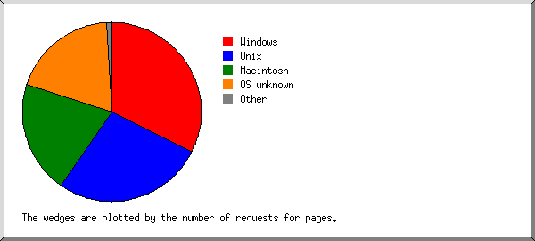
Listing operating systems, sorted by the number of requests for pages.
| # | #reqs | #pages | OS |
|---|---|---|---|
| 1 | 103 | 76 | Windows |
| 103 | 76 | Windows NT | |
| 2 | 136 | 64 | Unix |
| 136 | 64 | Linux | |
| 3 | 111 | 48 | Macintosh |
| 4 | 65 | 45 | OS unknown |
| 5 | 2 | 2 | Known robots |
(Go To: Top | General Summary | Monthly Report | Daily Summary | Hourly Summary | Domain Report | Organization Report | Failed Referrer Report | Referring Site Report | Browser Report | Browser Summary | Operating System Report | Status Code Report | File Size Report | File Type Report | Directory Report | Request Report)
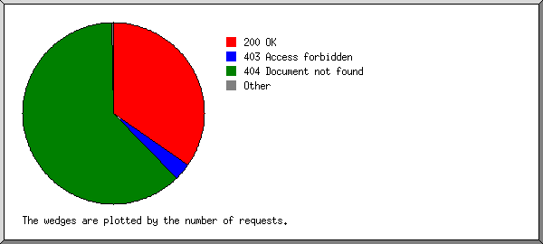
Listing status codes, sorted numerically.
| #reqs | status code |
|---|---|
| 417 | 200 OK |
| 3 | 301 Document moved permanently |
| 37 | 403 Access forbidden |
| 745 | 404 Document not found |
(Go To: Top | General Summary | Monthly Report | Daily Summary | Hourly Summary | Domain Report | Organization Report | Failed Referrer Report | Referring Site Report | Browser Report | Browser Summary | Operating System Report | Status Code Report | File Size Report | File Type Report | Directory Report | Request Report)
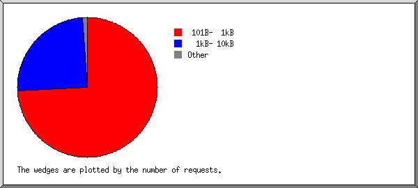
| size | #reqs | %bytes |
|---|---|---|
| 0 | 4 | |
| 1B- 10B | 0 | |
| 11B- 100B | 0 | |
| 101B- 1kB | 309 | 47.18% |
| 1kB- 10kB | 104 | 52.82% |
(Go To: Top | General Summary | Monthly Report | Daily Summary | Hourly Summary | Domain Report | Organization Report | Failed Referrer Report | Referring Site Report | Browser Report | Browser Summary | Operating System Report | Status Code Report | File Size Report | File Type Report | Directory Report | Request Report)
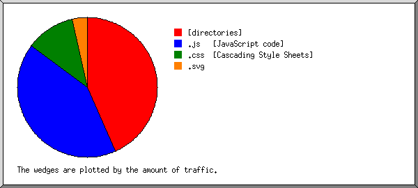
Listing extensions with at least 0.1% of the traffic, sorted by the amount of traffic.
| #reqs | %bytes | extension |
|---|---|---|
| 235 | 43.30% | [directories] |
| 112 | 41.81% | .js [JavaScript code] |
| 35 | 11.49% | .css [Cascading Style Sheets] |
| 35 | 3.40% | .svg |
(Go To: Top | General Summary | Monthly Report | Daily Summary | Hourly Summary | Domain Report | Organization Report | Failed Referrer Report | Referring Site Report | Browser Report | Browser Summary | Operating System Report | Status Code Report | File Size Report | File Type Report | Directory Report | Request Report)
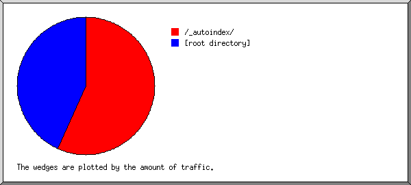
Listing directories with at least 0.01% of the traffic, sorted by the amount of traffic.
| #reqs | %bytes | directory |
|---|---|---|
| 182 | 56.70% | /_autoindex/ |
| 235 | 43.30% | [root directory] |
(Go To: Top | General Summary | Monthly Report | Daily Summary | Hourly Summary | Domain Report | Organization Report | Failed Referrer Report | Referring Site Report | Browser Report | Browser Summary | Operating System Report | Status Code Report | File Size Report | File Type Report | Directory Report | Request Report)
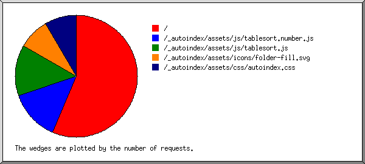
Listing files with at least 20 requests, sorted by the number of requests.
| #reqs | %bytes | last time | file |
|---|---|---|---|
| 235 | 43.30% | Jul/12/26 11:40 AM | / |
| 13 | 2.22% | Jul/ 9/26 6:19 AM | /?MD |
| 13 | 2.21% | Jul/ 9/26 6:19 AM | /?ND |
| 13 | 2.22% | Jul/ 9/26 6:19 AM | /?SA |
| 13 | 2.22% | Jul/ 9/26 6:19 AM | /?MA |
| 13 | 2.21% | Jul/ 9/26 6:19 AM | /?NA |
| 13 | 2.22% | Jul/ 9/26 6:19 AM | /?SD |
| 56 | 5.31% | Jul/12/26 9:03 AM | /_autoindex/assets/js/tablesort.number.js |
| 56 | 36.50% | Jul/12/26 9:03 AM | /_autoindex/assets/js/tablesort.js |
| 35 | 3.40% | Jul/12/26 9:03 AM | /_autoindex/assets/icons/folder-fill.svg |
| 35 | 11.49% | Jul/12/26 9:03 AM | /_autoindex/assets/css/autoindex.css |